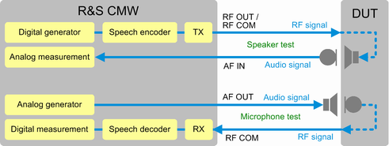

The scenario "Microphone- and Speakertest" tests the microphone and speaker built into a DUT, for example a mobile phone.
Only audio measurements can be performed with this scenario. For speech quality tests, additional external equipment is required, see "Test Setup for External Speech Analysis (Mono/Stereo)".
The DUT is typically attached to an artificial head, providing an artificial mouth (loudspeaker) and ear (microphone). Alternatively, a reference loudspeaker and microphone can be used. Some DUTs support also a direct electrical coupling. For basic functional tests, you can also use the handset R&S CMW-Z50. It provides a speaker and microphone and can be connected to AF IN and AF OUT.
The DUT is connected to the R&S CMW via an RF connection. A signaling application is used to set up a speech connection to the DUT. A speech codec is also required (R&S CMW-B405A).
For speaker tests, the digital audio generator provides an audio signal that is encoded, modulated on the RF and routed to the DUT. The DUT demodulates and decodes the signal and sends the audio signal to its loudspeaker. The artificial ear listens to the loudspeaker of the DUT and provides the resulting audio signal to an AF IN connector. The R&S CMW analyzes the signal with the analog audio measurement.
For microphone tests, the analog audio generator provides an audio signal that is routed via an AF OUT connector to the artificial mouth. The DUT listens to the artificial mouth, encodes the audio signal, modulates it on the RF and transmits the RF signal to the R&S CMW. The R&S CMW demodulates and decodes the signal and analyzes it with the digital audio measurement.

If your DUT supports electrical coupling, you can test the speaker and the microphone simultaneously. If you use acoustical coupling, it is recommended to test speaker and microphone one after another (switch on only one generator at a time). Otherwise, the two acoustical couplings at the DUT can interfere with each other.